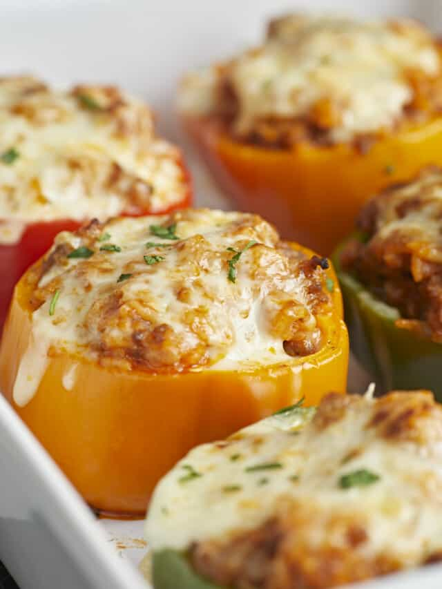

Home
Savory Stuffed Bell Peppers

Description
This is a simple, budget friendly recipe fit for college students or those
who just want a quick and cheap meal.
Ingredienst
- Bell peppers
- cooking oil
- Italian Sausage
- Diced Yellow Onion
- Garlic Cloves
- Italian Seasoning
- Garlic Powder
- Salt
- Black pepper
- Marinara Sauce
- Uncooked Long grain White rice
- Chicken Broth
- Shredded Mozzarella
Steps
- Preheat Oven to 350. Cut Bell Peppers in half
- Rub oil on peppers, then put into oven for 20 minutes
- While the bell peppers are baking, make the filling. Heat a large skillet over medium heat and add 1 Tbsp of oil. Brown the Italian sausage
- Once the sausage has browned, add the diced onion and minced garlic to the skillet. Continue to sauté over medium heat until the onion is translucent and the garlic is fragrant.
- Next add the uncooked rice, marinara sauce, Italian seasoning, garlic powder, 1 tsp of salt, and chicken broth to the skillet. Stir to combine.
- Place a lid on the skillet, turn the heat up to medium-high, and allow the mixture to come to a full boil. Once boiling, immediately reduce the heat to medium-low and allow the mixture to simmer, without lifting the lid or stirring, for 20 minutes. After 20 minutes, turn the heat off and let it rest, without lifting the lid, for an additional 5 minutes
- Next remove the lid, fluff the rice, and stir the mixture again to redistribute the ingredients. Begin to fill each bell pepper with the meat filling. Stuff as much filling as you can into each, filling them all the way to the top.Next remove the lid, fluff the rice, and stir the mixture again to redistribute the ingredients. Begin to fill each bell pepper with the meat filling. Stuff as much filling as you can into each, filling them all the way to the top.
- Top each bell pepper evenly with shredded mozzarella cheese. Loosely place some tented aluminum foil over the top of the casserole dish and bake for 15 minutes. After 15 minutes the bell peppers should be tender but not mushy.
- Now remove the foil and turn the heat on to broil. Broil the stuffed bell peppers for 2-3 minutes or just until the cheese gets a little brown on top. Be sure to watch the bell peppers closely at this step to prevent the cheese from over browning. Garnish with parsley, if desired, and enjoy!